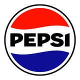

I lead Robi's direct channel in Chandpur, and I build the data tools my field team runs on. Years of sales, distribution and field operations taught me which numbers actually move a business. Now I'm turning that into a career in business analytics: clean data, honest KPIs and reports people open every morning.
PepsiCo marketing internship Banglalink sales and distribution Robi Axiata since 2022, DCM from Jan 2025 Business analytics next
45 RSSPsRobi Sales and Service Points built from scratch
104 peoplein the field team I lead across the Chandpur Region
50,000+customers served a year through my channel
Q2 2025National Best Regional Operation Manager award
Experience
Direct Channel Manager, Robi Axiata PLCJanuary 2025 to present
Chandpur Region
Built 45 Robi Sales and Service Points from scratch, from site selection and landlord agreements to renovation, hiring and agent training. 30 are live today.
Founding contributor to Robi WiFi (FWA) in the region, now at 1,500+ customers.
Lead a 104-person field team and a 73-bike fleet, serving 50,000+ customers a year.
Sales Manager, Robi Axiata PLCJuly 2023 to December 2024
Faridganj, Chandpur
Ran the Robi and Airtel business for a 150,000 customer base across 1,250 retail outlets.
Grew thana revenue 16% year on year, from 25 million to 29 million BDT a month.
Raised ARPU from 166 to 193 taka and grew CMS share by 3%.
Delivered 60,000+ new customers a year and looked after 670 million BDT of Robi investment.
Territory Manager, Robi Axiata PLCJanuary 2022 to June 2023
Owned a Robi and Airtel business worth 360 million BDT a year, with a 42-person sales team across two distribution points.
Gained 3.66% 4G market share and grew data revenue 7.1% year on year.
Brought 56% of retailers onto RedCube and reached 85% SIM POS parity for Airtel.
Launched Project Bondhu Retailer, Robi Service Desk and Pothe Pothe Robi Sheba.
Market Development Officer, BanglalinkJune 2021 to December 2021
Led an 18-person sales team across three thanas and 31 BTS sites.
Grew internet revenue 12% year on year and built the business under two newly launched BTS.
Pushed distribution deeper into rural areas with 3 new DSRs and 6 new routes.

Marketing Intern, PepsiCoApril 2021 to May 2021
Worked on "Iftar with 7 UP", the national Ramadan campaign for 7 UP across social media and offline.
Free tools I built
Taka Gelo Koi?taka.imtiazkarim.comBilingual money app with Google sign-in: income and spending, payslip PDFs, income tax, salary projection, savings goal, Zakat, and loan and fund registers. Every entry is encrypted on the device.JavaScript · Firebase · Web Crypto · pdf.js · SheetJS
PDF SqueezeScan, compress and merge PDFsTurns phone photos into clean scanned PDFs with auto crop and shadow removal, puts an NID front and back on one page at real size, then shrinks or merges PDFs.JavaScript · pdf.js · pdf-lib · Runs offline
PixelShrinkResize, edit, remove backgroundsShrinks photos by percentage or exact KB, sizes them for passport and visa forms in 40+ countries, and removes backgrounds with an AI model that runs on the phone.JavaScript · Canvas · ONNX AI model · Runs offline
Mohd Imtiaz Karim · CVPage 1 of 2
Featured work: the RSSP Business Tracker
A daily performance website my team of 100+ checks every morning, built and run by me.
The problem
Every morning I downloaded a raw activation export of tens of thousands of rows, rebuilt my Excel dashboard by hand and pasted screenshots into WhatsApp. Supervisors saw yesterday's numbers late, field staff never saw their own, and nobody could check stock or bike activity in one place.
What I built
A website that turns the raw Activation, SIM stock, bike distance, staff and attendance exports into live KPIs, with every file read on the phone and only summaries stored.
Leaderboards, RSSP detail pages, supervisor scorecards, stock cover and FIFO lists, a bike compliance tracker and a DCM KPI scorecard.
A Morning Brief with an action list, stars of the week and a weekly digest that goes out on WhatsApp in one tap.
Bangla and English, a team PIN with a short preview for visitors, and private admin views for targets and sensitive data.
What changed
One morning upload replaces hours of manual reporting.
Business rules that were in my head are now written into the data: what counts as GA, which material codes are excluded, what a productive bike day is.
Supervisors and RFOs see their own numbers and their gaps the same morning.
Live demo on made-up data: imtiazkarim.com/rssp-demo
More projects
Bangladesh mobile market, 2024 to 2026Public BTRC data, SQL analysisTwo years of the regulator's monthly subscriber figures, collected from scattered reports, checked against published totals and analysed in SQLite. The market lost 6.6 million subscriptions in 17 months, bottomed in January 2026 and has won 5.3 million back.SQL · SQLite · Data cleaning · JavaScript charts · Live dashboard
Robi WiFi FWA sales journeyChandpur and Lakshmipur, Aug 2025 to Jun 2026How a new fixed wireless product reached 1,500+ customers across 20+ thanas. I mapped sales onto Bangladesh upazila boundaries to show where demand actually came from, and published it as a nine-slide LinkedIn story.Python · matplotlib · Choropleth map · Data story
Superbike fleet productivity73 bikes, Chandpur RegionA daily compliance rule (every bike runs 3 KM or more) and a monthly productivity KPI (20 good days), tracked per bike, per distributor and per supplier, with fault reports and repeat zero-KM flags.KPI design · GPS data · Dashboard
Building the RSSP network45 points from scratchSetting up Robi Sales and Service Points across 14 upazilas of Chandpur and Lakshmipur: site selection, staffing, shop agreements and the operating rhythm that keeps 30 of them live and selling today.Channel strategy · Operations · Data story
Telco customer churnCase study, 7,043 customersWhich customers leave a telecom and how early you can tell, answered in SQL. One in five customers, found with five simple rules, holds half of all churn. Ends with what I would change in the field as a channel manager.SQL · Window functions · Segmentation · Field playbook
RedCube Super QR, user acceptance testingRobi's retailer app, 500,000+ usersTested special access for RSSP Agents and the Super QR flow, where a customer scans a shop's QR and the retailer approves a recharge in seconds. Then ran a one-week beta with five RSSP Agents before the national launch.UAT · Product testing · National launch
Looking for someone who knows both the field and the data? I'm open to business analyst and analytics roles where operations experience counts. The quickest way to reach me is LinkedIn or WhatsApp.